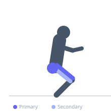
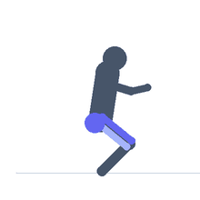

Exercise guide / Single-Leg Squat (Pistol Squat)
Single-Leg Squat (Pistol Squat)
The pistol squat is a unilateral squat performed on one leg while the other leg is extended forward parallel to the floor. It demands exceptional strength, ankle dorsiflexion, hip mobility, and balance. The working leg must squat to full depth and return to standing without the support of the other foot. It is one of the most challenging bodyweight lower body exercises and serves as an excellent test of single-leg strength and control.
Primary muscles
rectus femoris
vastus lateralis
vastus medialis
gluteus maximus
Secondary muscles
gluteus medius
biceps femoris long head
iliacus
Stabilizers
tensor fasciae latae
transverse abdominis
gastrocnemius medial
Equipment
No Equipment (Bodyweight)


Starting position
- Stand on one foot with the arms extended forward for counterbalance. Lift the non-working leg off the floor and extend it in front of you.
Setup
- No equipment needed. Beginners can hold a TRX strap or doorframe for balance assistance. Use a box or bench for assisted regressions.
Steps
- Step 1: Stand on the working leg with arms extended forward. Extend the free leg in front at approximately hip height.
- Step 2: Brace your core and begin the descent by pushing the hips back and bending the knee over the toes.
- Step 3: Descend until the hip is at or below knee height. The free leg stays extended forward throughout. Use the arms for counterbalance.
- Step 4: Drive through the entire working foot — heel, midfoot, and ball — to return to full standing extension.
- Step 5: Complete all reps on one side, then switch.
Coaching cues
- Reach forward with both arms to counterbalance
- Hips back first, then bend the knee
- Drive through the heel — don't let the foot roll in
Breathing
- Inhale before descent. Exhale at the top of each rep.
Range of motion
- Full depth: hip at or below knee of the working leg. Free leg remains straight and elevated throughout.
Tempo
- 3-0-1-0 — control the descent; a slow eccentric is excellent for building strength
Common mistakes
- Allowing the working knee to cave inward due to insufficient hip strength
- Rising onto the toe of the working foot at the bottom
- Losing extension of the free leg (bending the knee and placing the foot down)
Safety
- Progress through regressions (box squat single-leg, assisted pistol) before attempting a full pistol squat
- Ankle dorsiflexion is often the limiting factor — address with mobility work before loading
Training
- strength: 2–6 reps
- hypertrophy: 5–10 reps
- endurance: 10–15 reps
- strength: 3–5 sets
- hypertrophy: 3–4 sets
- endurance: 2–3 sets
- Rest: {'strength': 120, 'hypertrophy': 90, 'endurance': 60}